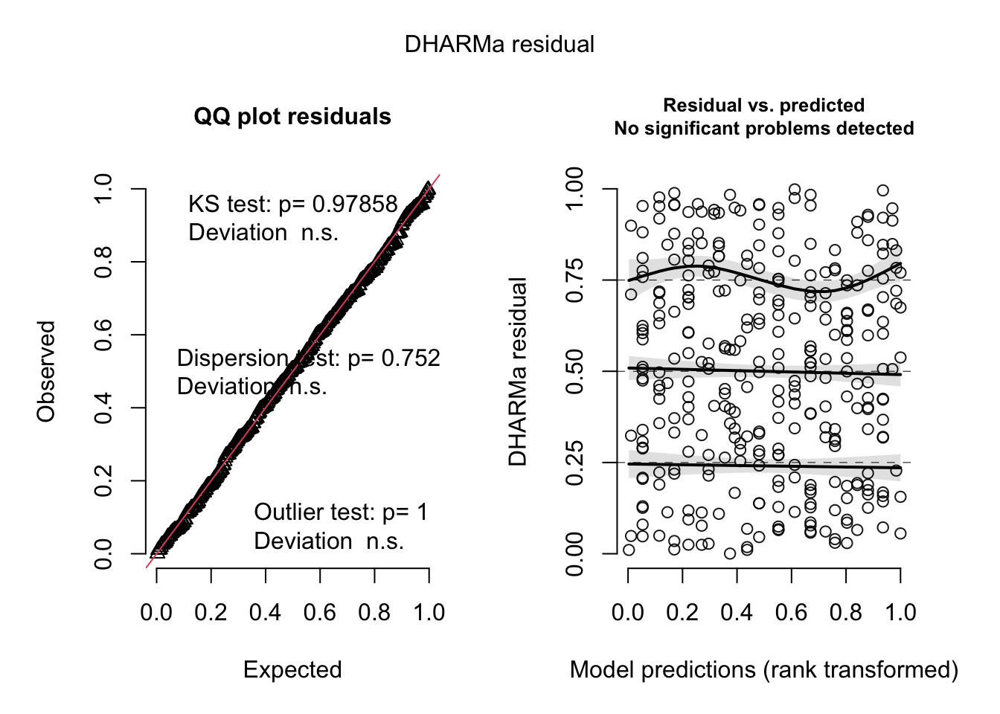
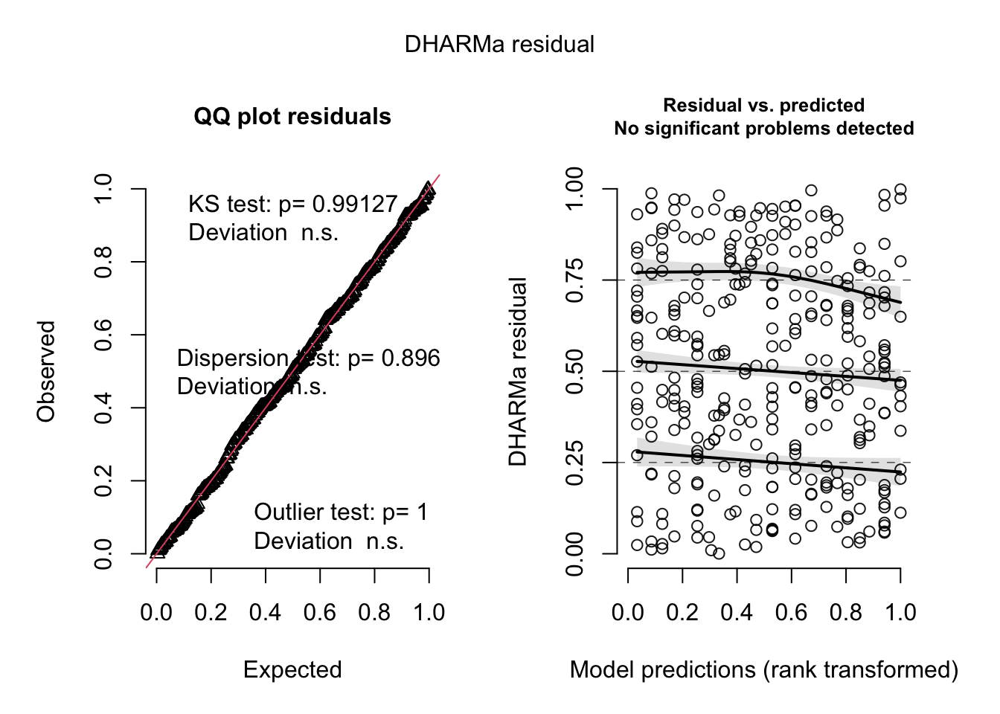
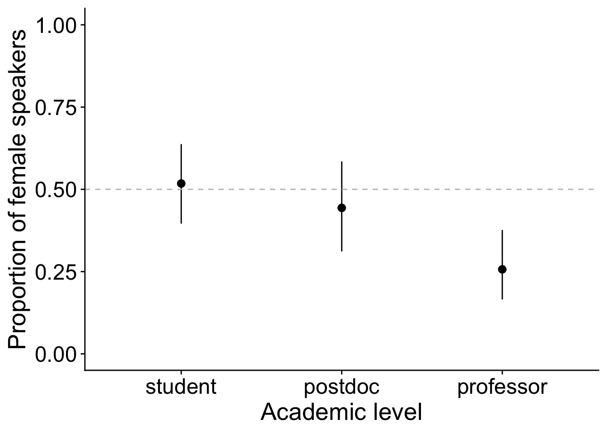

Gender bias in speakers and career position
Melina Leite & Júlia Barreto
30 de Junho de 2024
Last updated: 2024-06-30
Checks: 7 0
Knit directory:
genderBias_EcoEncontros_website/
This reproducible R Markdown analysis was created with workflowr (version 1.7.1). The Checks tab describes the reproducibility checks that were applied when the results were created. The Past versions tab lists the development history.
Great! Since the R Markdown file has been committed to the Git repository, you know the exact version of the code that produced these results.
Great job! The global environment was empty. Objects defined in the global environment can affect the analysis in your R Markdown file in unknown ways. For reproduciblity it’s best to always run the code in an empty environment.
The command set.seed(20240630) was run prior to running
the code in the R Markdown file. Setting a seed ensures that any results
that rely on randomness, e.g. subsampling or permutations, are
reproducible.
Great job! Recording the operating system, R version, and package versions is critical for reproducibility.
Nice! There were no cached chunks for this analysis, so you can be confident that you successfully produced the results during this run.
Great job! Using relative paths to the files within your workflowr project makes it easier to run your code on other machines.
Great! You are using Git for version control. Tracking code development and connecting the code version to the results is critical for reproducibility.
The results in this page were generated with repository version 9aaac61. See the Past versions tab to see a history of the changes made to the R Markdown and HTML files.
Note that you need to be careful to ensure that all relevant files for
the analysis have been committed to Git prior to generating the results
(you can use wflow_publish or
wflow_git_commit). workflowr only checks the R Markdown
file, but you know if there are other scripts or data files that it
depends on. Below is the status of the Git repository when the results
were generated:
Ignored files:
Ignored: .DS_Store
Ignored: .Rhistory
Ignored: .Rproj.user/
Ignored: .github/.DS_Store
Ignored: output/.DS_Store
Note that any generated files, e.g. HTML, png, CSS, etc., are not included in this status report because it is ok for generated content to have uncommitted changes.
These are the previous versions of the repository in which changes were
made to the R Markdown
(analysis/1_speakers_genderPosition.Rmd) and HTML
(docs/1_speakers_genderPosition.html) files. If you’ve
configured a remote Git repository (see ?wflow_git_remote),
click on the hyperlinks in the table below to view the files as they
were in that past version.
| File | Version | Author | Date | Message |
|---|---|---|---|---|
| Rmd | 67d23e5 | melina-leite | 2024-06-30 | test |
| html | 67d23e5 | melina-leite | 2024-06-30 | test |
Data
Data description and summary statistics in script
0_data_summary.
load("output/data_proportion.Rdata")
load("output/data_pop_ppge.Rdata")
data <- data_pCreating dummy column to indicate if the speaker is a female (1) or not (0)
data$fem <- 1
data$fem[data$gender == "M"] <- 0 Modeling
Proportions of female speakers by academic level, before and after affirmative actions. Controling for population proportions: the ratio of females at the graduate program by academic level and year.
data <- data %>% left_join(pop2[,c(1:2,10)], by=c("year", "position_cat"="category")) %>%
mutate(position_cat = fct_relevel(position_cat, "student","postdoc",
"professor"))Mixed effects model, including year as random intercept.
Binomial distribution
mod0 <- glmmTMB(fem ~ 1 + ratioFcat + (1|year),
family=binomial, data= data)
mod1 <- glmmTMB(fem ~ affirm_action + ratioFcat + (1|year),
family=binomial, data= data)
mod2 <- glmmTMB(fem ~ position_cat + ratioFcat + (1|year),
family=binomial, data= data)
mod3 <- glmmTMB(fem ~ position_cat + affirm_action + ratioFcat + (1|year),
family=binomial, data= data)
mod4 <- glmmTMB(fem ~ position_cat*affirm_action + ratioFcat + (1|year),
family=binomial, data= data)
kable(AICtab(mod0,mod1,mod2,mod3,mod4, base=T, weights=T), digits=2)| AIC | dAIC | df | weight | |
|---|---|---|---|---|
| mod4 | 424.53 | 0.00 | 8 | 0.46 |
| mod2 | 425.28 | 0.76 | 5 | 0.32 |
| mod3 | 426.58 | 2.05 | 6 | 0.17 |
| mod0 | 430.06 | 5.53 | 3 | 0.03 |
| mod1 | 430.28 | 5.76 | 4 | 0.03 |
Residual diagnostic of the selected models
Using the DHARMa package.
The two most plausible models presented a satisfactory residual diagnostic.
plot(simulateResiduals(mod4))
| Version | Author | Date |
|---|---|---|
| 67d23e5 | melina-leite | 2024-06-30 |
plot(simulateResiduals(mod2))
| Version | Author | Date |
|---|---|---|
| 67d23e5 | melina-leite | 2024-06-30 |
Models results
Predicting the proportion of female speakers fixing the population gender ration at 1 (1:1).
summary(mod4) Family: binomial ( logit )
Formula: fem ~ position_cat * affirm_action + ratioFcat + (1 | year)
Data: data
AIC BIC logLik deviance df.resid
424.5 454.7 -204.3 408.5 312
Random effects:
Conditional model:
Groups Name Variance Std.Dev.
year (Intercept) 0.1212 0.3482
Number of obs: 320, groups: year, 12
Conditional model:
Estimate Std. Error z value Pr(>|z|)
(Intercept) 0.29007 0.60483 0.480 0.63152
position_catpostdoc -0.73206 0.44008 -1.663 0.09622 .
position_catprofessor -1.62478 0.49738 -3.267 0.00109 **
affirm_actionafter -0.31017 0.48019 -0.646 0.51832
ratioFcat -0.01994 0.33070 -0.060 0.95191
position_catpostdoc:affirm_actionafter 1.63408 0.87174 1.874 0.06086 .
position_catprofessor:affirm_actionafter 1.40254 0.70266 1.996 0.04593 *
---
Signif. codes: 0 '***' 0.001 '**' 0.01 '*' 0.05 '.' 0.1 ' ' 1performance::r2(mod4)# R2 for Mixed Models
Conditional R2: 0.148
Marginal R2: 0.116my4 <- ggpredict(mod4, terms=c("position_cat","affirm_action",
"ratioFcat[1]"))
| Version | Author | Date |
|---|---|---|
| 67d23e5 | melina-leite | 2024-06-30 |
summary(mod2) Family: binomial ( logit )
Formula: fem ~ position_cat + ratioFcat + (1 | year)
Data: data
AIC BIC logLik deviance df.resid
425.3 444.1 -207.6 415.3 315
Random effects:
Conditional model:
Groups Name Variance Std.Dev.
year (Intercept) 0.1167 0.3417
Number of obs: 320, groups: year, 12
Conditional model:
Estimate Std. Error z value Pr(>|z|)
(Intercept) -0.08559 0.50324 -0.170 0.8650
position_catpostdoc -0.29729 0.36009 -0.826 0.4090
position_catprofessor -1.13366 0.40007 -2.834 0.0046 **
ratioFcat 0.15673 0.30040 0.522 0.6019
---
Signif. codes: 0 '***' 0.001 '**' 0.01 '*' 0.05 '.' 0.1 ' ' 1performance::r2(mod2)# R2 for Mixed Models
Conditional R2: 0.117
Marginal R2: 0.085my2 <- ggpredict(mod2, terms=c( "position_cat",
"ratioFcat[1]"))
| Version | Author | Date |
|---|---|---|
| 67d23e5 | melina-leite | 2024-06-30 |
sessionInfo()R version 4.3.1 (2023-06-16)
Platform: aarch64-apple-darwin20 (64-bit)
Running under: macOS Sonoma 14.5
Matrix products: default
BLAS: /Library/Frameworks/R.framework/Versions/4.3-arm64/Resources/lib/libRblas.0.dylib
LAPACK: /Library/Frameworks/R.framework/Versions/4.3-arm64/Resources/lib/libRlapack.dylib; LAPACK version 3.11.0
locale:
[1] pt_BR.UTF-8/pt_BR.UTF-8/pt_BR.UTF-8/C/pt_BR.UTF-8/pt_BR.UTF-8
time zone: America/Sao_Paulo
tzcode source: internal
attached base packages:
[1] stats4 stats graphics grDevices utils datasets methods base
other attached packages:
[1] glmmTMB_1.1.9 performance_0.11.0 bbmle_1.0.25.1 ggeffects_1.5.1
[5] DHARMa_0.4.6 patchwork_1.2.0 cowplot_1.1.3 lubridate_1.9.3
[9] forcats_1.0.0 stringr_1.5.1 dplyr_1.1.4 purrr_1.0.2
[13] readr_2.1.5 tidyr_1.3.1 tibble_3.2.1 ggplot2_3.5.1
[17] tidyverse_2.0.0 knitr_1.45 workflowr_1.7.1
loaded via a namespace (and not attached):
[1] Rdpack_2.6 sandwich_3.1-0 rlang_1.1.4 magrittr_2.0.3
[5] git2r_0.33.0 multcomp_1.4-25 compiler_4.3.1 getPass_0.2-4
[9] mgcv_1.9-1 callr_3.7.6 vctrs_0.6.5 pkgconfig_2.0.3
[13] fastmap_1.2.0 labeling_0.4.3 utf8_1.2.4 promises_1.3.0
[17] rmarkdown_2.27 tzdb_0.4.0 haven_2.5.4 ps_1.7.6
[21] nloptr_2.0.3 xfun_0.42 cachem_1.1.0 jsonlite_1.8.8
[25] highr_0.10 later_1.3.2 parallel_4.3.1 R6_2.5.1
[29] gap.datasets_0.0.6 bslib_0.7.0 stringi_1.8.4 qgam_1.3.4
[33] boot_1.3-30 jquerylib_0.1.4 numDeriv_2016.8-1.1 estimability_1.5
[37] Rcpp_1.0.12 iterators_1.0.14 zoo_1.8-12 httpuv_1.6.15
[41] Matrix_1.6-5 splines_4.3.1 timechange_0.3.0 tidyselect_1.2.1
[45] rstudioapi_0.16.0 yaml_2.3.8 doParallel_1.0.17 TMB_1.9.11
[49] codetools_0.2-20 processx_3.8.4 lattice_0.22-6 plyr_1.8.9
[53] shiny_1.8.1.1 withr_3.0.0 coda_0.19-4.1 evaluate_0.23
[57] survival_3.5-8 pillar_1.9.0 gap_1.5-3 whisker_0.4.1
[61] foreach_1.5.2 insight_0.19.10 generics_0.1.3 rprojroot_2.0.4
[65] hms_1.1.3 munsell_0.5.1 scales_1.3.0 minqa_1.2.6
[69] xtable_1.8-4 glue_1.7.0 emmeans_1.10.1 tools_4.3.1
[73] lme4_1.1-35.2 fs_1.6.4 mvtnorm_1.2-5 grid_4.3.1
[77] rbibutils_2.2.16 datawizard_0.10.0 bdsmatrix_1.3-7 colorspace_2.1-0
[81] nlme_3.1-164 cli_3.6.2 fansi_1.0.6 gtable_0.3.5
[85] sass_0.4.9 digest_0.6.35 TH.data_1.1-2 farver_2.1.2
[89] htmltools_0.5.8.1 lifecycle_1.0.4 httr_1.4.7 mime_0.12
[93] MASS_7.3-60.0.1